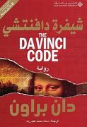

دار المعارف الناشر
تصنيف قصص شعبة
كتاب أسطوري يضم مجموعة من القصص الشعبية من الشرق الأوسط وجنوب آسيا وشمال أفريقيا تم
جمعها خلال
العصر الذهبي للإسلام .يتم سرد القصص ضمن أطار قصة مركزية تتضمن الشخصية الرئيسية
،شهرزات
التي تحكي
حكايات الملك شهريات لتأجل إعدامه
:ملخص
الطابق الثالث
أهم القصص
978-9953891718
موسم الهجرة إلى الشمال
12000 ل.س
موسم الهجرة إلى الشمال هي رواية كتبها الطيب صالح
ونشرت في البداية في مجلة حوار (ع
5-6، ص 5-87)
في أيلول/سبتمبر 1966، ثم نشرت بعد ذلك في كتاب مستقل عن دار العودة في بيروت في نفس
العام.
في هذه الرواية يزور مصطفى سعيد، وهو طالب عربي، الغرب. مصطفى يصل من الجنوب، من
إفريقيا، بعيدًا عن
الثقافة الغربية إلى الغرب بصفة طالب. يحصل على وظيفة كمحاضر في إحدى الجامعات
البريطانية ويتبنى
قيم المجتمع البريطاني، وهناك يتعرف إلى زوجته، جين موريس، وهي امرأة بريطانية ترفض
قبول إملاءات
زوجها. بعد أعوام يعود مصطفى إلى بلاده، حيث يلتقي هناك بصورة مفاجئة براوي القصة الذي
عاش أيضًا في
بريطانيا. القصة نفسها تروى عن طريق قصص يرويها الراوي والبطل.
978-9953451080
الخبز الحافي
10000 ل.س
الخبز الحافي هي رواية تعدّ من أشهر الكتب الأدبية للكاتب محمد شكري،
وأكثرها جدلاً.
كتبت بالعربية
سنة 1972 وترجمها إلى الإنجليزية بول بولز سنة 1973، وترجمها إلى الفرنسية الطاهر
بنجلون سنة 1981،
ولم تنشر بالعربية حتى سنة 1982 بسبب ما أثارته من جدل حول جرأتها غير المألوفة. ترجمت
الرواية إلى
تسع وثلاثين لغة أجنبية.
123-1234503456
شيفرة دافنتشي
12000ل.س
رواية تشويق وغموض بوليسية خيالية للمؤلف الأمريكي دان براون نشرت عام 2003.
حققت
الرواية مبيعات كبيرة تصل إلى 60.5 مليون نسخة (حتى آذار/مارس 2006) وصنفت على رأس
قائمة الروايات الأكثر مبيعاً في قائمة صحيفة نيويورك تايمز الأمريكية. تم ترجمة
الرواية
إلى 56 لغة حتى الآن بمليوني نسخة.

234-1234503456
في قلبي أنثى عبرية
32000ل.س
للكاتبة خولة حمدي
تدور أحداث الرواية حول قصة حقيقية لفتاة يهودية اسمها ندى تعيش في دولة لبنان مع
أسرتها
اليهودية، كما تصور الرواية تفاصيل تطور حياة ندى وريما، اللتان كتب عليهما القدر
أن
يلتقيا ليقابلا مصيراً متشابهاً.
.jpg)
.jpg)
.jpg)
.jpg)
.jpg)
.jpg)
.jpg)
.jpg)